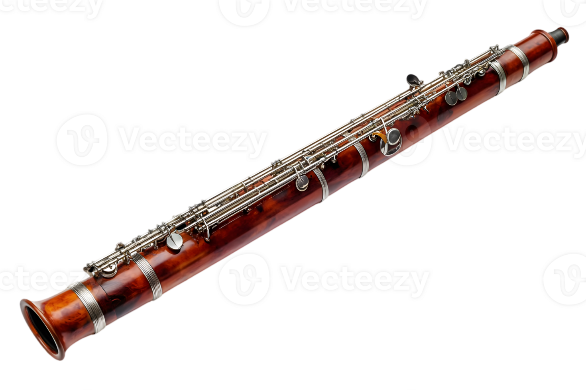
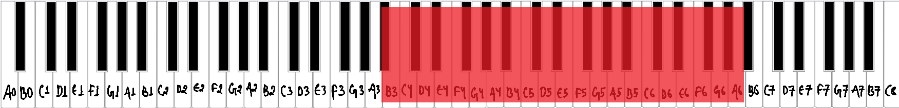
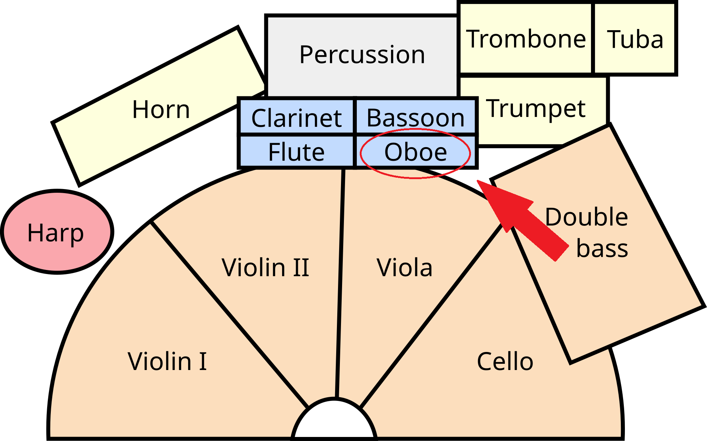
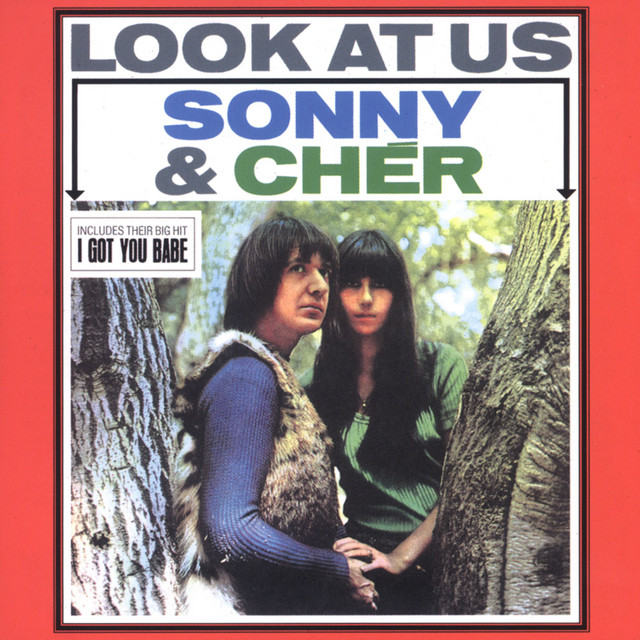
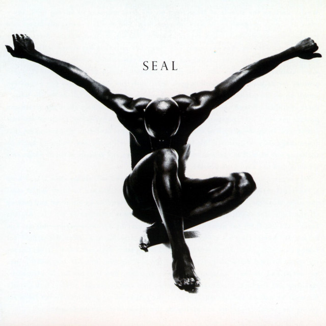
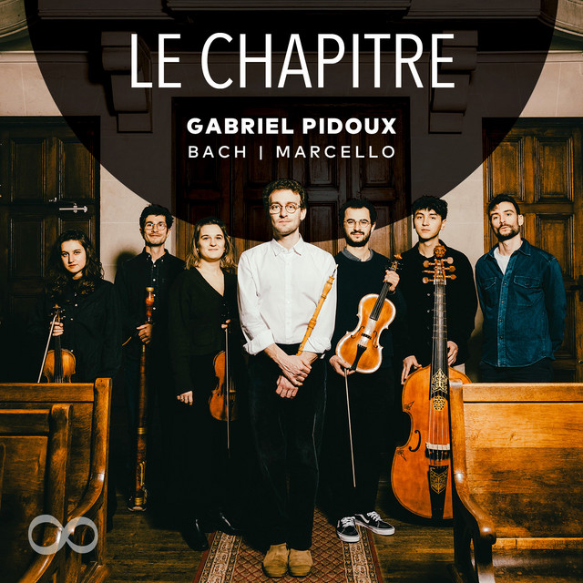

What is an oboe?
The oboe is a woodwind instrument that uses a double reed, two thin blades of cane tied together. The player blows through the narrow gap between the blades, which makes a bright, penetrating tone. Because its pitch is steady and clear, the oboe plays the tuning note for the whole orchestra. [1]

Musical range and clef
The oboe's standard range runs from B♭3 up to about A6, a little over two and a half octaves. [2]
Oboe music is written in the treble clef. The instrument is non-transposing, so the notes on the page are the notes you hear. [3]


Where is the oboe seated in an orchestra?
Woodwinds sit in the middle of the orchestra, behind the strings and in front of the brass and percussion. From the conductor's podium, the flutes are on the left of the woodwind rows, followed by the oboes, clarinets and bassoons toward the right. Oboes sit next to the flutes, in the middle of the woodwind section. [4]

Popular songs/pieces that feature the instrument:
Nightswimming

I Got You Babe

Kiss From A Rose

Oboe Concerto in D minor
References
- Wikipedia, "Oboe".
- Wikipedia, "Oboe".
- Wikipedia, "Oboe".
- Rockford Symphony Orchestra, "Are all orchestras arranged on stage the same way?".